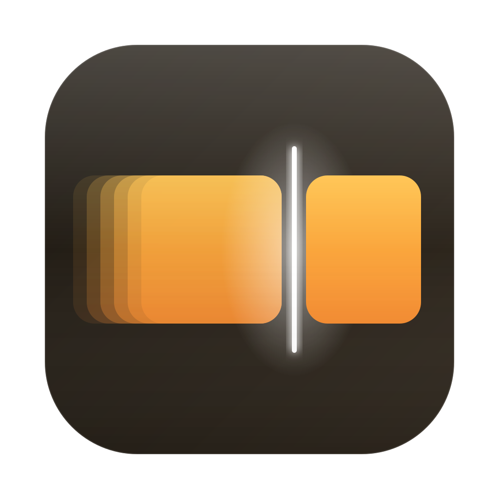
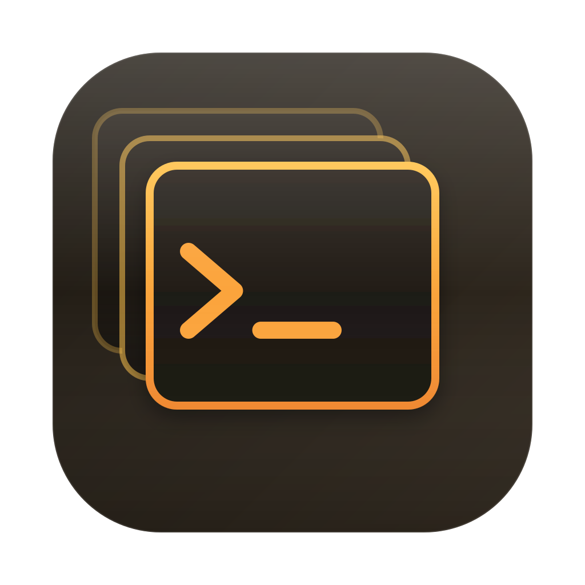

ZeroSpace 1.1, a desktop switcher for macOS 27
No slide, no fade;
the desktop is simply there.
ZeroSpace switches macOS desktops with no animation at all. Press cmd and a number from 1 to 5, and that desktop is there, full-screen apps included; another shortcut carries the focused window one desktop over and follows it.
Why I created this
I spend most of my day on Linux with xmonad, where switching workspaces is instant: press a key and the other desktop is simply there. On the Mac every switch slides, and macOS has no setting to stop it; Reduce Motion only trades the slide for a fade. TotalSpaces used to fix exactly this, and I missed it once it stopped keeping up with macOS. yabai with skhd can get close, but its instant switching needs SIP partly turned off and a scripting addition loaded into the Dock, and even then it never felt as immediate as I wanted. I wanted one small app that does this one thing.
It turned out that macOS 27 will switch desktops instantly for any app with Accessibility access, through private operations in its window server, with SIP left on. So I built ZeroSpace around them: cmd+1 to cmd+5 jump straight to a desktop, and cmd+shift with an arrow carries the focused window to the next one and follows it. I designed and wrote it with an AI coding agent, Claude; most of the work was finding the right private operations, not writing the code.
If the slide bothers you too, read on. If you want tiling or a full window manager, yabai, AeroSpace, Amethyst and newer ones such as OmniWM, HyprSpace and HyprMac do far more.
No animation
Not a faster slide: the window server switches the desktop, so there is nothing to animate.
Windows come along
Carry the focused window one desktop over and follow it.
SIP stays on
No scripting addition and nothing changed in macOS; ZeroSpace needs only Accessibility access.
Small and quiet
About 1,000 lines of Rust with no dependencies, no Dock icon and no event tap.
Keys
Jump and carry
There are two kinds of shortcut: one jumps to a desktop, and one carries the focused window along. Each switch flashes the desktop's number in the middle of the screen for half a second, and once it has landed, the frontmost window there gets the keyboard, as macOS would give it.
Jump
Go straight to desktop 1 to 5, counted as Mission Control shows them, full-screen apps included. Arriving where you already are just flashes the number.
Carry
Take the focused window one desktop over and follow it, stepping over full-screen apps, which cannot hold another window.
While ZeroSpace runs, the app in front no longer gets these shortcuts: a browser’s cmd 1 for its first tab, or cmd shift ← to select to the start of a line. macOS’s own shortcuts come first, though: its Switch to Desktop shortcuts on cmd 1 to cmd 5 keep those keys from ZeroSpace, so turn them off in System Settings, Keyboard, Keyboard Shortcuts, Mission Control, or let the nix-darwin module do it. cmd shift with a number is left alone, so the screenshot shortcuts on cmd shift 3, 4 and 5 keep working.
Numbering
Counted the way Mission Control shows them
ZeroSpace numbers the desktops by their place in the Mission Control bar of the display under the pointer, full-screen apps included, so cmd 3 always reaches whatever sits third, even an app in full screen.
It cannot add desktops: make as many as you like in Mission Control, and turn off “Automatically rearrange Spaces based on most recent use” in System Settings, Desktop & Dock, so the numbers stay where they are.
How it works
The window server makes the switch
macOS has no setting to turn the switch animation off. The usual ways around it either need SIP partly disabled, as yabai’s scripting addition does, or play the slide very quickly, which is still a slide.
ZeroSpace asks the window server, SkyLight, to make the switch itself, through three of its private “bridged” operations, each sent with perform. macOS 27 accepts them from any app that has Accessibility access, with SIP left on, and the desktop simply changes.
- A hot keyA Carbon hot key brings cmd 2 to ZeroSpace; no event tap watches your typing.
- Show
SLSBridgedshows desktop 2.Show Spaces Operation - Hide
SLSBridgedhides the display’s other desktops.Hide Spaces Operation - Make it current
SLSBridgedmakes desktop 2 the display’s own.Managed Display Set Current Space Operation
Moving a window is a fourth, SLSBridged. Once a switch has landed, ZeroSpace gives the keyboard to the frontmost window on screen there, or to Finder on an empty desktop. A window you sent there comes to the front when you next switch there with ZeroSpace, since the window server leaves a moved window behind the others.
The bridged operations came to ZeroSpace from native-space-kit, which documents them, and from a pull request to InstantSpaceSwitcher by apellis, which uses them to carry a dragged window across a switch.
Scripting
A socket for scripts
ZeroSpace listens on a Unix socket, ~/.cache/zerospace.sock, and takes the same actions as text, one command a connection, answering with a line of its own.
From a shell
printf 'go 3' | nc -U ~/.cache/zerospace.sock
printf 'carry left' | nc -U ~/.cache/zerospace.sock
printf 'state' | nc -U ~/.cache/zerospace.sock| Command | What it does |
|---|---|
go N | Switch to slot N, beyond the five on the keys too |
send N | Send the focused window to slot N and stay |
carry left|right | Carry the focused window one desktop over and follow it |
move WINDOW N | Move a window, by its window number, to the Nth desktop, counting desktops only and not full-screen apps |
peek | Name the window a jump back to this desktop would focus |
state | Describe the display, its desktops, the current one and the focused window |

xsp
xmonad’s scratchpads for macOS: Alacritty terminals, or any app, each on a key of its own. It uses state and move to bring a pad to the desktop you are on.
Install
Install it with nix-darwin
ZeroSpace is made for macOS 27, and has been tested on macOS 27.0.1 and 26.7.1 on Apple Silicon. It installs with nix-darwin from its repository, which is a Nix flake.
Add ZeroSpace to nix-darwin
{
inputs.zerospace.url = "github:crazyboycjr/zerospace";
inputs.zerospace.inputs.nixpkgs.follows = "nixpkgs";
outputs = { nix-darwin, zerospace, ... }: {
darwinConfigurations.my-mac = nix-darwin.lib.darwinSystem {
modules = [
zerospace.darwinModules.default
{
services.zerospace.enable = true;
# The default, spelled out: macOS's Switch to Desktop
# 1 to 5 shortcuts off, so cmd+1 to cmd+5 reach ZeroSpace
services.zerospace.disableSwitchToDesktopShortcuts = true;
# nix-darwin's own option: keep desktops in order, so
# the numbers stay
system.defaults.dock.mru-spaces = false;
}
# your configuration, with system.primaryUser set
];
};
};
}- Add the flake and turn on its module in your nix-darwin configuration, as here, beside your own modules.
- Switch to it:
sudo darwin-rebuild switch --flake ~/.config/nix-darwin. - Allow Accessibility when ZeroSpace asks, in System Settings, Privacy & Security, Accessibility.
The module installs ZeroSpace and starts it as a login agent, which logs to ~/Library/Logs/ZeroSpace.log. It also turns off macOS’s Switch to Desktop 1 to 5 shortcuts, and only those, since macOS handles them before any app and they would keep cmd 1 to cmd 5 from ZeroSpace. If your nixpkgs has no apple-sdk_26, drop the follows line, and the flake builds with the nixpkgs it pins.
Desktops and permission
Add the desktops you want in Mission Control. With mru-spaces off, as here, macOS keeps them in order, so the numbers stay where they are; System Settings calls it “Automatically rearrange Spaces based on most recent use”, under Desktop & Dock.
Nix builds are signed ad hoc, so macOS asks for Accessibility again whenever an update changes ZeroSpace.
Update and remove
nix flake update zerospace
sudo darwin-rebuild switch --flake ~/.config/nix-darwinTo remove ZeroSpace, take the module out and switch again, and take ZeroSpace out of Accessibility. The Switch to Desktop shortcuts stay off until you turn them on again in System Settings, Keyboard, Keyboard Shortcuts, Mission Control.
To build ZeroSpace from source, or sign it with a certificate of your own, see Building ZeroSpace.
Limits
Worth knowing first
- ZeroSpace has only been tested on macOS 27.0.1 and 26.7.1 on Apple Silicon, with one display. With several, it is meant to act on the display under the pointer, but that is untested.
- The bridged operations are private and undocumented, so a macOS update can change or remove them. ZeroSpace checks for them when it starts and logs it when they are missing; then the keys stop switching.
- It cannot create, remove or reorder desktops; Mission Control does that.
- Five desktops are on the keys. The socket’s
goreaches the rest. - There is no tiling or window layout; for that, yabai and AeroSpace do far more.
- The shortcuts are fixed in the source; to change them, edit
register_hot_keysand build ZeroSpace yourself.